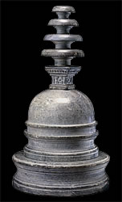

HarmikaThe harmika was a small platform with a railing located at the very top of a stupa. Sometimes umbrellas were mounted in the harmika as a symbol of honour and respect. 
A model stupa showing a harmika with umbrellas. A piece of stone railing was found near the ruins of the Amaravati Stupa in the 1970s. Archaeologists believe that it may have been part of the harmika. This relief shows a stupa with a harmika and umbrellas. |